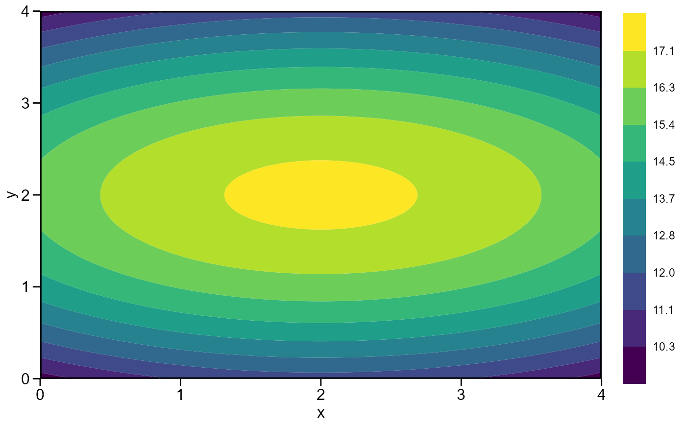

Compute a surface model and find the best combination of factor1 and factor2 to obtain the stationary point.
resp_surf( .data, factor1, factor2, rep = NULL, resp, prob = 0.05, verbose = TRUE )
| .data | The dataset containing the columns related to Environments, factor1, factor2, replication/block and response variable(s). |
|---|---|
| factor1 | The first factor, for example, dose of Nitrogen. |
| factor2 | The second factor, for example, dose of potassium. |
| rep | The name of the column that contains the levels of the
replications/blocks, if a designed experiment was conducted. Defaults to
|
| resp | The response variable(s). |
| prob | The probability error. |
| verbose | If |
Tiago Olivoto tiagoolivoto@gmail.com
# \donttest{ library(metan) # A small toy example df <- data.frame( expand.grid(x = seq(0, 4, by = 1), y = seq(0, 4, by = 1)), z = c(10, 11, 12, 11, 10, 14, 15, 16, 15, 14, 16, 17, 18, 17, 16, 14, 15, 16, 15, 14, 10, 11, 12, 11, 10) ) mod <- resp_surf(df, x, y, resp = z)#> ----------------------------------------------------------------- #> Anova table for the response surface model #> ----------------------------------------------------------------- #> Analysis of Variance Table #> #> Response: z #> Df Sum Sq Mean Sq F value Pr(>F) #> x 1 0.000 0.000 0.00 1 #> y 1 0.000 0.000 0.00 1 #> I(x^2) 1 12.857 12.857 106.88 3.073e-09 *** #> I(y^2) 1 142.857 142.857 1187.50 < 2.2e-16 *** #> x:y 1 0.000 0.000 0.00 1 #> Residuals 19 2.286 0.120 #> --- #> Signif. codes: 0 '***' 0.001 '**' 0.01 '*' 0.05 '.' 0.1 ' ' 1 #> ----------------------------------------------------------------- #> Model equation for response surface model #> Y = B0 + B1*A + B2*D + B3*A^2 + B4*D^2 + B5*A*D #> ----------------------------------------------------------------- #> Estimated parameters #> B0: 9.8857143 #> B1: 1.7142857 #> B2: 5.7142857 #> B3: -0.4285714 #> B4: -1.4285714 #> B5: 0.0000000 #> ----------------------------------------------------------------- #> Matrix of parameters (A) #> ----------------------------------------------------------------- #> -0.4285714 0.0000000 #> 0.0000000 -1.4285714 #> ----------------------------------------------------------------- #> Inverse of the matrix A (invA) #> -2.3333333 0.0000000 #> 0.0000000 -0.7000000 #> ----------------------------------------------------------------- #> Vetor of parameters B1 e B2 (X) #> ----------------------------------------------------------------- #> B1: 1.7142857 #> B2: 5.7142857 #> ----------------------------------------------------------------- #> Equation for the optimal points (A and D) #> ----------------------------------------------------------------- #> -0.5*(invA*X) #> Eigenvalue 1: -0.428571 #> Eigenvalue 2: -1.428571 #> Stacionary point is maximum! #> ----------------------------------------------------------------- #> Stacionary point obtained with the following original units: #> ----------------------------------------------------------------- #> Optimal dose (x): 2 #> Optimal dose (y): 2 #> Predicted: 17.3143 #> ----------------------------------------------------------------- #> Fitted model #> ----------------------------------------------------------------- #> A = x #> D = y #> y = 9.88571+1.71429A+5.71429D+-0.42857A^2+-1.42857D^2+0A*D #> ----------------------------------------------------------------- #> Shapiro-Wilk normality test #> p-value: 0.04213785 #> WARNING: at 5% of significance, residuals can not be considered normal! #> ------------------------------------------------------------------# }